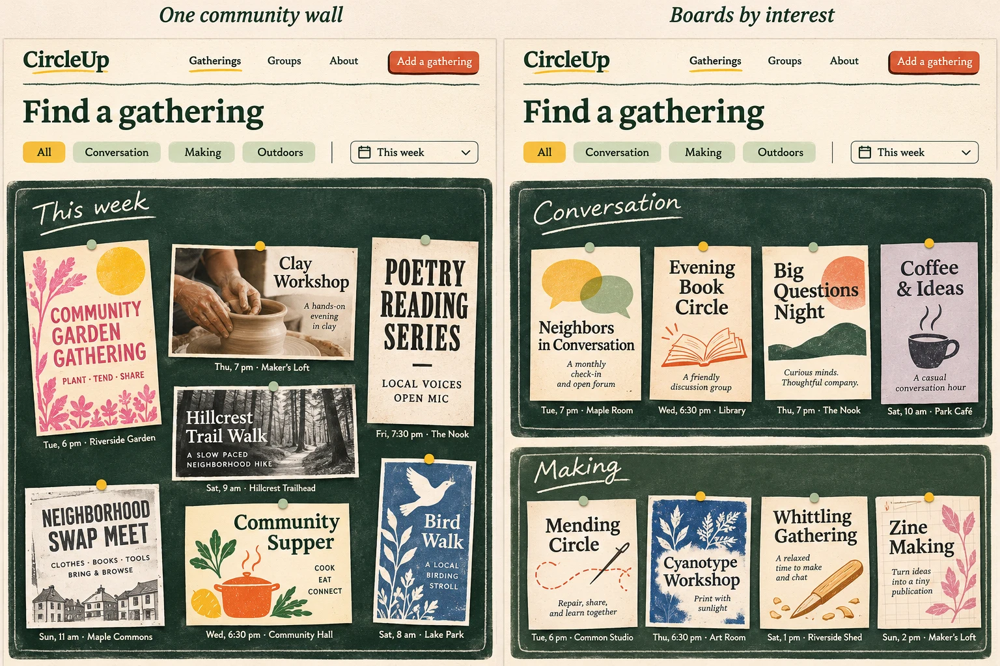
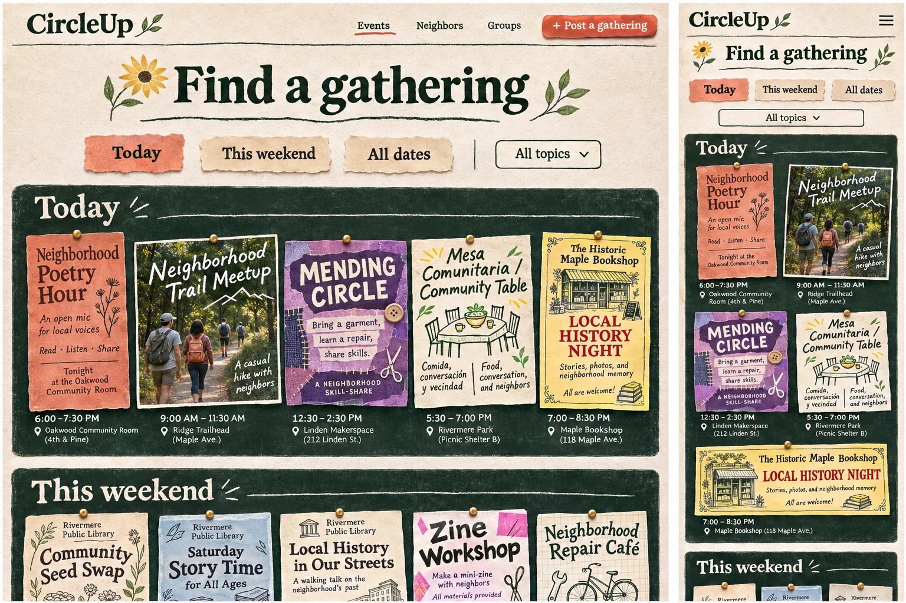

CircleUp
Try the flyer wall
Scrolling boards
Design gallery
Flyer wall studies
Generated layout studies with fictional flyer art.
One wall and boards by interest

Boards by date on desktop and phone
